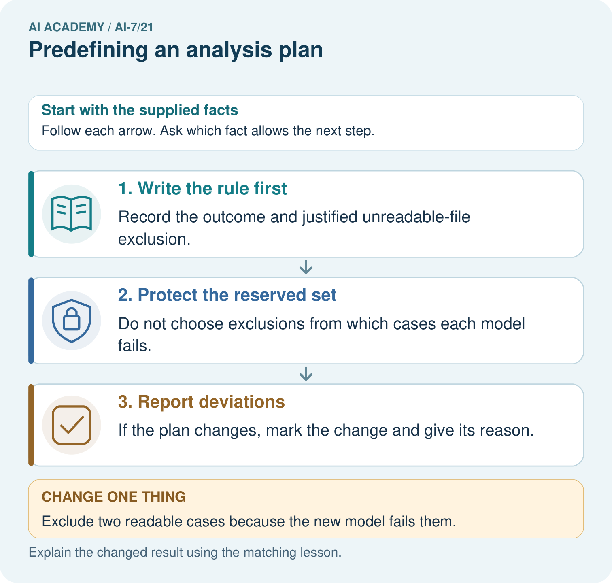
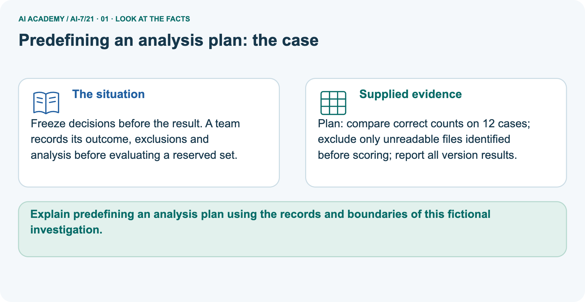
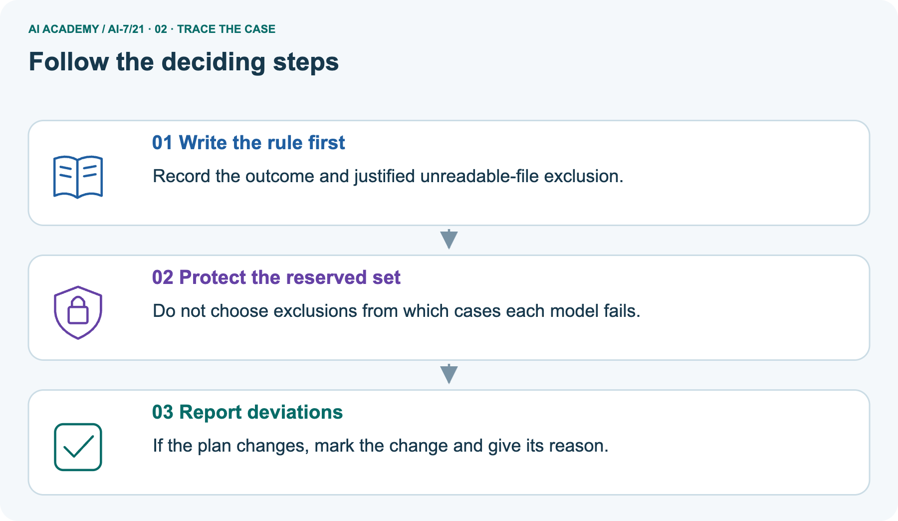
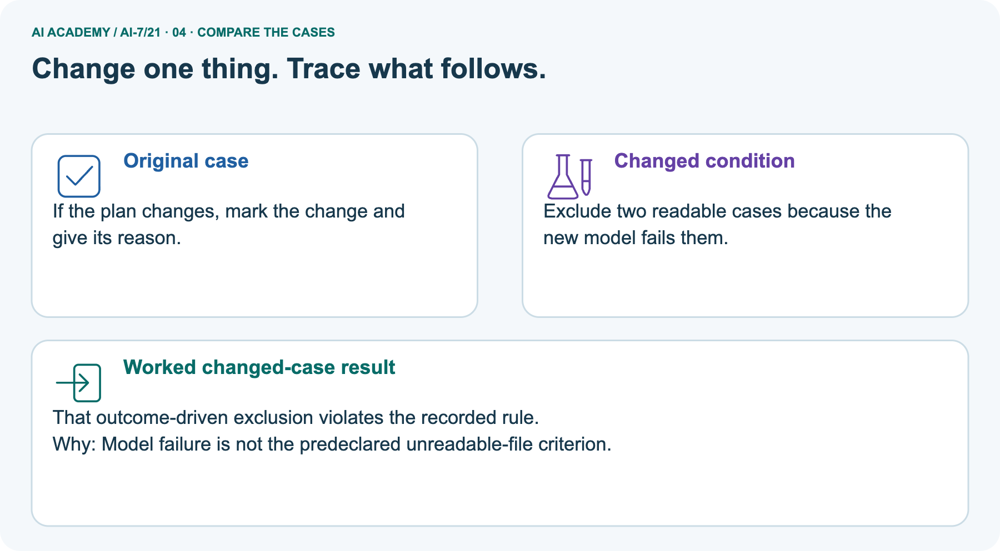
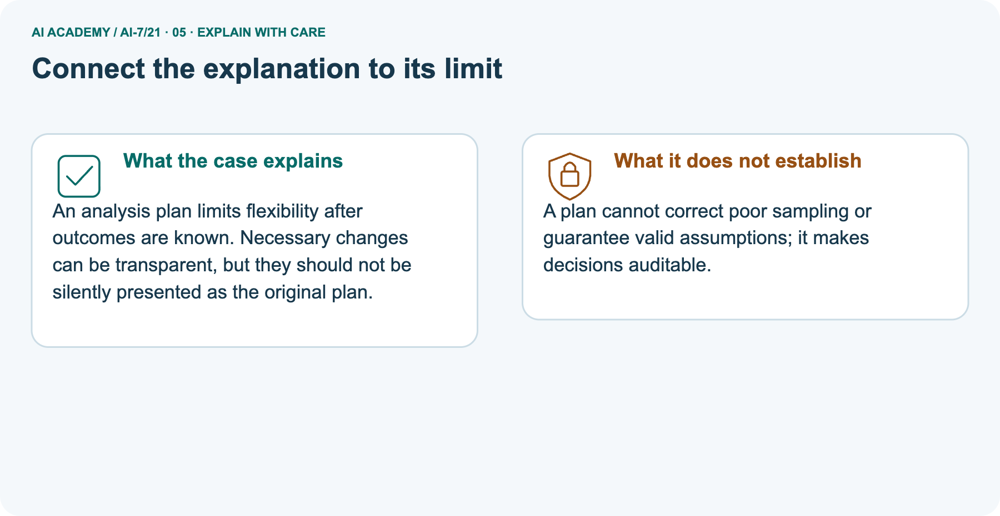
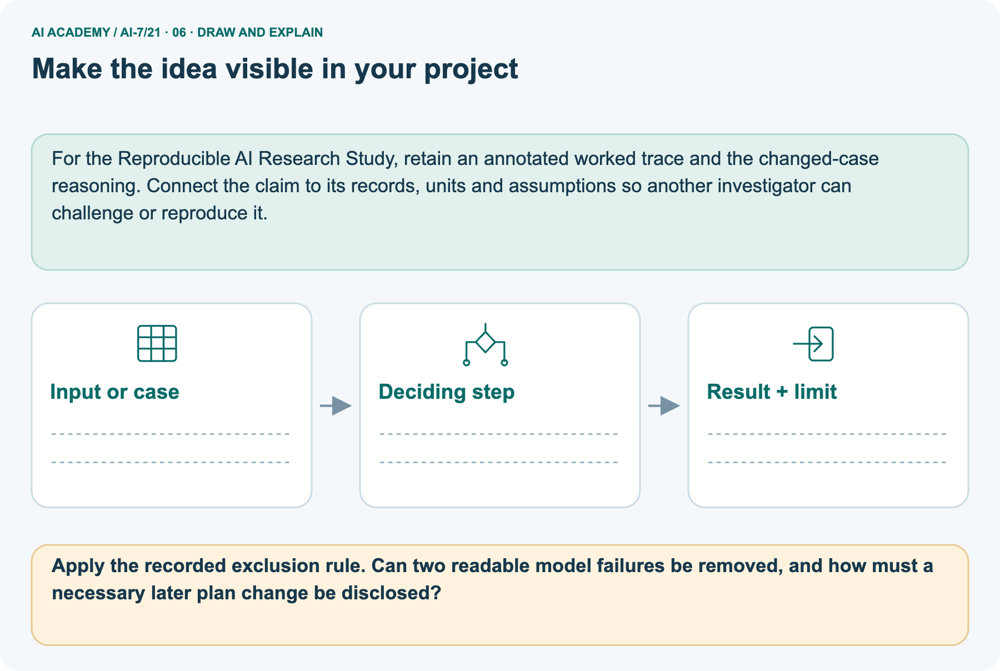

AI Academy · Level 7 · Grade 12 · Week 21 · Workbook
Predefining an analysis plan
Learn to understand, design, build, test and explain AI systems responsibly.
Project: Reproducible AI Research Study
Workbook · 1 of 15
Recall and choose your starting point
Record your starting explanation for Predefining an analysis plan before opening notes. Show any later correction separately.
Try the recall before opening notes. Then use a different colour or a labelled second line to correct your explanation.
Privacy and data governance
Without opening the old lesson, explain one key idea from Privacy and data governance. Give an example and a mistake that the idea helps you avoid.
Dataset and benchmark limitations
Without opening the old lesson, explain one key idea from Dataset and benchmark limitations. Give an example and a mistake that the idea helps you avoid.
Multiple comparisons
Without opening the old lesson, explain one key idea from Multiple comparisons. Give an example and a mistake that the idea helps you avoid.
Workbook · 2 of 15
Practise with fading help
Complete the supported Predefining an analysis plan trace and record the first step you can explain without help.
Use W2: Trace the worked case for Predefining an analysis plan. Record the answer once; the lesson and workbook refer to the same attempt.
| Given inputs | Procedure I chose | Middle steps | Result and check |
|---|---|---|---|
Workbook · 3 of 15
Individual reasoning check
Check the proposed Predefining an analysis plan explanation against the supplied facts before discussing it.
Use the worked case for Predefining an analysis plan. Proposed explanation: “The worked result establishes every future case”. Decide whether this explanation is supported.
Point to the step or supplied fact that decides; explain your repair if needed.
Workbook · 4 of 15
Independent transfer case
Write one first attempt at the reserved independent case before feedback. Repeated copies of that case refer to the same recorded attempt.
Independent case: Apply a new case independently
Plan excludes malformed inputs by a rule fixed beforehand. Three of15 are malformed; 9 of12 eligible pass. Report.
Attempt this case before feedback. Record any help. Earlier examples below are further practice; a case already practised with feedback cannot establish fresh transfer.
Workbook · 5 of 15
W1 Explain the mechanism
Explain the mechanism. Apply the supplied Predefining an analysis plan facts and keep your reasoning.
Explain the weekly mechanism in your own words. Use the worked scenario to name its input, decision rule and output.
Workbook · 6 of 15
W2 Trace the worked case
Trace the worked case. Apply the supplied Predefining an analysis plan facts and keep your reasoning.
Plan includes all20 cases. After results, the team removes four failed cases because they make the graph look worse. Show the intermediate steps and give the conclusion with its scope.
Workbook · 7 of 15
W3 Audit the limit
Audit the limit. Apply the supplied Predefining an analysis plan facts and keep your reasoning.
A report omits this qualification: A prespecified plan can still be flawed; transparency prevents hidden changes, not invalid assumptions.
Explain how omitting it could change a reader's interpretation, and write an accurate replacement.
Workbook · 8 of 15
W4 Apply a new case independently
Attempt before feedback. If this repeats the selected independent case, reuse that first attempt; otherwise keep a separate record. Apply a new case independently. Apply the supplied Predefining an analysis plan facts and keep your reasoning.
Plan excludes malformed inputs by a rule fixed beforehand. Three of15 are malformed; 9 of12 eligible pass. Report.
Workbook · 9 of 15
W5 Design a revealing follow-up
Design a revealing follow-up. Apply the supplied Predefining an analysis plan facts and keep your reasoning.
For the worked scenario, propose one additional case that could reveal a failure, describe its expected outcome before running it, and explain what would need to remain fixed for a fair comparison.
Do not reuse W4 as a new final test after receiving feedback.
Workbook · 10 of 15
Project checkpoint and reflection
Connect Predefining an analysis plan to Reproducible AI Research Study, identify a limit and choose the next useful test.
Add a labelled predefining an analysis plan evidence sheet to Reproducible AI Research Study. Show how you can explain the mechanism and terminology of predefining an analysis plan.
Use the supplied fictional case and keep its inputs, intermediate steps, calculation or prediction, and limitation. Connect this record to last week’s record; a matching answer without a trace is insufficient.
Workbook · 11 of 15
Feedback, return check and learning record
Record the first repaired step and a different case to revisit after a delay.
| Evidence | My record |
|---|---|
| Worked alone / hint / model | |
| First step I repaired and why | |
| New case checked later; date and result | |
| What I can now explain without notes | |
| One remaining question |
Revisit this idea with your teacher after a delay. Familiarity is different from explaining and using it on a changed case.
Workbook · 12 of 15
Pictorial case practice: Predefining an analysis plan
Freeze decisions before the result. A team records its outcome, exclusions and analysis before evaluating a reserved set. Explain the labelled step before checking the changed condition.
Freeze decisions before the result. A team records its outcome, exclusions and analysis before evaluating a reserved set.
Plan: compare correct counts on 12 cases; exclude only unreadable files identified before scoring; report all version results.

Apply the recorded exclusion rule. Can two readable model failures be removed, and how must a necessary later plan change be disclosed?
Record the help used
Support used: alone / hint / worked example. This record is practice evidence.
Project connection: For the Reproducible AI Research Study, retain an annotated worked trace and the changed-case reasoning.
Connect the claim to its records, units and assumptions so another investigator can challenge or reproduce it.
Workbook · 13 of 15
Project portfolio milestone
Keep this week’s input, deciding step, result and limit together in the Reproducible AI Research Study record.
Project: Reproducible AI Research Study
Current milestone: Evaluate and revise. Compare with your starting method, explain errors and record a justified revision.
For the Reproducible AI Research Study, retain an annotated worked trace and the changed-case reasoning. Connect the claim to its records, units and assumptions so another investigator can challenge or reproduce it.
| Evidence to keep | My record |
|---|---|
| This week’s input and deciding step | |
| Prediction and actual result (or labelled paper trace) | |
| One change since the previous checkpoint and why | |
| One error or limit and the next test |
Workbook · 14 of 15
Supported practice and learning evidence
Try the supported questions before comparing with hints and feedback. Record what you repaired and the evidence you retained.
Use this supported practice once, in the browser or on paper. Keep the reserved independent assessment for a separate first attempt before teacher feedback.
Freeze decisions before the result. A team records its outcome, exclusions and analysis before evaluating a reserved set.
Practice 1: explain the deciding evidence
Which labelled step matches this detail? If the plan changes, mark the change and give its reason.
1. Protect the reserved set
2. Write the rule first
3. Report deviations
Hint · try first
Hint if needed: Read the steps in the pictorial case. Match the supplied detail to the stage that performs or records it.
Feedback · compare after trying
After your attempt, compare with the supported explanation: Report deviations If the plan changes, mark the change and give its reason. An analysis plan limits flexibility after outcomes are known.
Necessary changes can be transparent, but they should not be silently presented as the original plan.
Practice 2: explain the deciding evidence
Changed case · predict first
Changed-case practice: Exclude two readable cases because the new model fails them. Which conclusion is supported by the supplied facts?
1. That outcome-driven exclusion violates the recorded rule.
2. This one example guarantees correct results for every future input.
3. We can decide the result without examining the changed input or the procedure.
Hint · try first
Hint if needed: Use the changed condition and the deciding step in the pictorial trace. The answer must say what follows from those facts.
Feedback · compare after trying
After your attempt, compare with the supported explanation: That outcome-driven exclusion violates the recorded rule. Model failure is not the predeclared unreadable-file criterion.
Repair a missing building block
Review Privacy and data governance (ai-7/20). Goal: Explain the mechanism and terminology of privacy and data governance. Short practice: Point to the analysis table and the restricted identity key.
Why are the codes pseudonymous rather than guaranteed anonymous, and what changes if the key is published?. Return to this week and explain what you changed.
Review Dataset and benchmark limitations (ai-7/18). Goal: Explain the mechanism and terminology of dataset and benchmark limitations. Short practice: Report the indoor benchmark with its denominator and missing condition.
After two correct outdoor cases out of four are added, what slice rate is supported and what remains uncertain?. Return to this week and explain what you changed.
Review Multiple comparisons (ai-7/15). Goal: Explain the mechanism and terminology of multiple comparisons. Short practice: Calculate the six-test cutoff and identify which supplied p-values reject.
Why must the team count every planned comparison rather than report only its smallest p-value?. Return to this week and explain what you changed.
Keep your completed work
Use Download completed work in the hosted lesson to export your answers, reflections, practice feedback and code-run evidence. Open the HTML copy to read or print it.
Drafts stay in this browser when storage is available; clear drafts on a shared device.
Workbook · 15 of 15
Visual concept journey
Explain each Predefining an analysis plan picture from its labels, then record a relevant limit.
01. Predefining an analysis plan: the case

Freeze decisions before the result. A team records its outcome, exclusions and analysis before evaluating a reserved set.
Supplied facts: Plan: compare correct counts on 12 cases; exclude only unreadable files identified before scoring; report all version results.
Point to the given fact that matters most. Explain why it matters.
02. Follow the deciding steps

Write the rule first: Record the outcome and justified unreadable-file exclusion. → Protect the reserved set: Do not choose exclusions from which cases each model fails. → Report deviations: If the plan changes, mark the change and give its reason.
Point to each numbered stage and explain which recorded input it uses.
03. Predefining an analysis plan — evidence trace

Predefining an analysis plan — evidence trace. Plan includes all20 cases.
After results, the team removes four failed cases because they make the graph look worse. | Declare primary metric, eligible cases, missing handling, baseline, test assumptions and reporting.
Timestamp/version the plan; label later choices exploratory. | The exclusion is outcome-informed and violates the plan. Report original16/20 if16 passed, and label any revised analysis with reasons rather than hiding failures.
Read the labels and values. Explain the relationship the model shows.
04. Change one thing. Trace what follows.

Original case: If the plan changes, mark the change and give its reason. Changed condition: Exclude two readable cases because the new model fails them.
Expected result: That outcome-driven exclusion violates the recorded rule. Reason: Model failure is not the predeclared unreadable-file criterion.
Predict before checking the worked changed-case result. Name what changed and what the supplied facts allow you to conclude.
05. Connect the explanation to its limit

An analysis plan limits flexibility after outcomes are known. Necessary changes can be transparent, but they should not be silently presented as the original plan.
Limit: A plan cannot correct poor sampling or guarantee valid assumptions; it makes decisions auditable.
Explain the case, then point to a limit on the claim.
06. Make the idea visible in your project

For the Reproducible AI Research Study, retain an annotated worked trace and the changed-case reasoning. Connect the claim to its records, units and assumptions so another investigator can challenge or reproduce it.
Draw your input, deciding step, result and limit. Supported question: Apply the recorded exclusion rule. Can two readable model failures be removed, and how must a necessary later plan change be disclosed?
Draw your project trace and justify the deciding step using evidence.